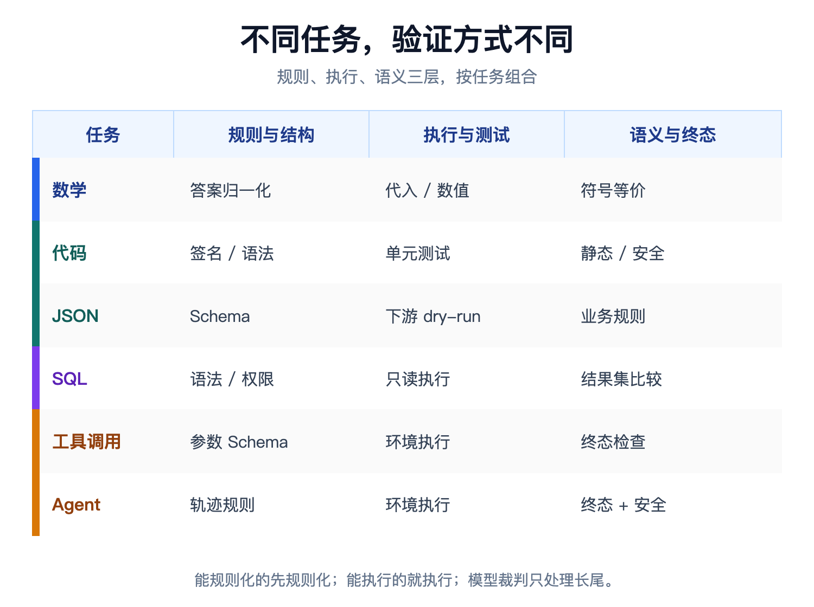
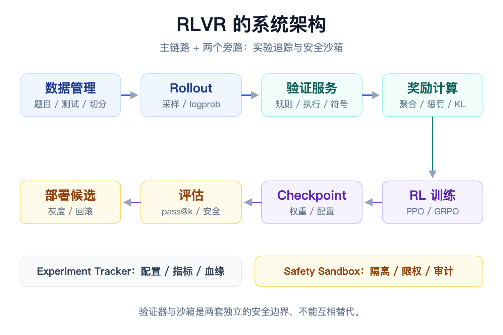

从答案归一化、测试分层到沙箱和工程架构
适合读者：正在做数学推理、代码生成或 Agent 训练的技术同学
前两篇讲了原理和训练流程。
这一篇进入具体任务：数学题怎么判断答案等价，代码题怎么设计测试，JSON、SQL 和工具调用怎么验证，以及一个可落地的系统长什么样。
先说结论：不同任务的验证器差别很大，但设计思路是一致的。
能规则化的先规则化，能执行的就执行，能符号检查的就符号检查；模型裁判只处理长尾，不做主裁判。
数学 RLVR 的数据通常包含题目、参考答案、题型、难度和答案格式。
格式差异是验证器最大的敌人。
同一个答案，可能写成：
5、5.0、x=5、\boxed{5}、5 元归一化要做这些事：
$、\text{} 等包装；但不要过度归一化。把单位、定义域、多解顺序全部抹平，会把错误答案判成正确。
等价性验证通常分三层：
candidate - reference；SymPy 不是万能的。化简可能很慢、失败，或因假设不同给出不同结果。工程上要设超时，准备数值兜底，对高风险样本人工审核。
| 常见问题 | 典型表现 | 缓解 |
|---|---|---|
| 格式不统一 | 抽取失败或误判 | 统一协议、规则版本化 |
| 多解顺序不同 | 正确解被判错 | 集合比较、维护完整解集 |
| 答案对推理错 | 猜中或枚举 | 扰动测试、过程检查、抽检 |
| 题目有歧义 | 不同理解不同答案 | 数据清洗、明确约定 |
| 验证器超时 | 复杂表达式卡住 | 超时、数值兜底、缓存 |
代码题样本要包含题面、函数签名、公开测试、隐藏测试、约束和难度。
验证一般分五层。
| 层级 | 检查内容 | 失败含义 |
|---|---|---|
| 编译 | 语法、导入、签名 | 代码不可执行 |
| 公开测试 | 题面样例 | 基本功能错误 |
| 隐藏测试 | 边界、随机用例 | 泛化不足 |
| 静态安全 | 危险调用、权限 | 沙箱风险 |
| 性能 | 时间、内存 | 复杂度不达标 |
隐藏测试是关键。公开测试可以出现在题面，隐藏测试只用于验证。模型看得到测试，就会针对测试优化。
代码执行必须假设输入是恶意的。
最低限度的防护包括：
一个常见错误，是在训练容器里直接执行模型代码。这会让模型代码和训练进程共享文件系统、网络和环境变量，一旦被利用，后果不只是奖励错误。
代码题还有几类高频问题：过拟合公开测试、硬编码样例、非确定性测试、依赖版本漂移。对应的缓解方式，分别是隐藏测试与随机输入、检查测试常量、固定种子与容差、固定镜像与依赖锁。
JSON 的验证可以分层：
Schema 要尽量严格。只检查“是对象”，模型就会输出缺字段的 JSON；只检查“是数字”，模型就会输出负数价格。
SQL 更复杂，因为 SQL 可以执行、有副作用、依赖数据库状态。
安全流程是：先解析，再检查权限，只允许 SELECT；然后在只读副本上执行，设置超时和行数上限；最后比较结果集。
结果比较要用多重集，注意 NULL、重复行、列顺序和浮点误差。对于有 ORDER BY 要求的查询，才比较顺序。
工具调用要看五件事：
Agent 任务还要看轨迹：有没有无效循环，步数是否超预算，失败能否回滚，Trace 是否完整。
| 任务 | 验证重点 | 常见风险 |
|---|---|---|
| JSON | Schema、业务规则 | Schema 太松 |
| SQL | 只读、结果集 | 危险语句、慢查询 |
| 工具调用 | 选择、参数、顺序 | 越权、mock 失真 |
| Agent | 终态、轨迹、安全 | 长程信用分配、循环 |

图 5：规则、执行、语义三层，按任务组合使用。
最小系统可以拆成八个模块。
| 模块 | 职责 | 关键风险 |
|---|---|---|
| 数据管理 | 题目、答案、测试、切分 | 泄漏、重复、难度失衡 |
| Rollout | 并行采样、logprob | 吞吐、超时、权重不同步 |
| 验证服务 | 数学、代码、格式、工具 | 误判、被攻击、沙箱故障 |
| 奖励计算 | 聚合、惩罚、KL | 权重失衡、尺度漂移 |
| RL 训练 | PPO / GRPO、checkpoint | 梯度爆炸、策略坍缩 |
| 评估 | held-out、pass@k、回归 | 评测污染、指标误导 |
| 实验追踪 | 配置、指标、血缘 | 版本不可追溯 |
| 安全沙箱 | 隔离、限权、审计 | 逃逸、资源耗尽、泄漏 |
数据流可以写成：
数据集 → Rollout → Verifier → Reward
→ Trainer → Checkpoint → Eval但实际系统是闭环。评估结果会反过来影响数据配比、验证器规则、奖励权重和训练配置。
工程上还有几个细节：
验证请求要幂等、可缓存；缓存键包含代码、测试、环境版本和种子。
验证服务要和训练集群分域部署，不能访问模型权重和密钥。
模型、数据、验证器、沙箱镜像都要版本化。

图 6：主链路之外，实验追踪与安全沙箱是两个独立旁路。
def score(task, out):
ok, info = verify(task, out)
if info.error:
return None
return reward(ok, out)
def train(tasks, policy, ref, cfg):
for step in range(cfg.steps):
batch = []
for task in sample(tasks, cfg.bs):
outs = rollout(policy, task, cfg)
rewards = [score(task, o)
for o in outs]
adv = group_adv(rewards)
for o, a in zip(outs, adv):
if a is not None:
batch.append((task,o,a))
loss = ppo_loss(policy, ref, batch)
loss.backward()
policy.step()
if step % cfg.eval_every == 0:
evaluate(policy, cfg.eval_set)
policy.save(f"ckpt-{step}")这段伪代码有四个关键点。
第一，每个问题采样一组回答，而不是一个。这样才有组内对比信号。
第二，验证器返回三态。error 的样本跳过，不能当成模型错误。
第三，奖励分项计算。正确性、格式、长度、安全分开记录，方便排查模型在优化什么。
第四，KL 惩罚限制策略漂移，定期评估和保存 checkpoint。
数学任务的关键是归一化和等价判断。
代码任务的关键是隐藏测试和沙箱。
结构化输出和工具调用的关键，是把“任务成功”写成可检查的终态。
工程上，验证器、沙箱和评估体系，比训练算法更值得先投入。
下一篇讲评估、常见误区、未来趋势，以及给工程团队的落地建议。
下一篇：评估、误区与落地建议